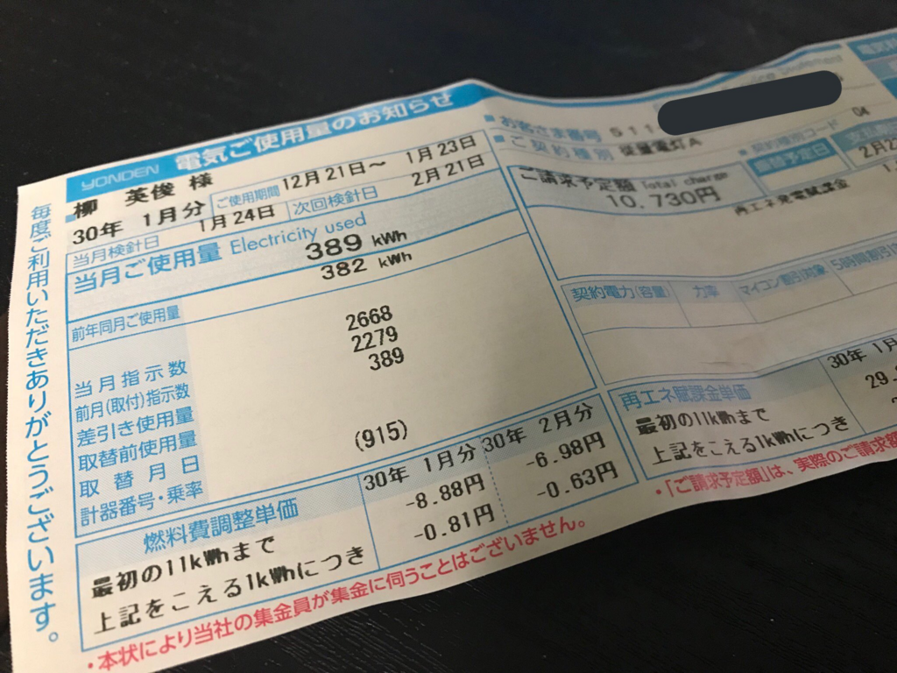

日記：バイクのオイル交換をした
公開日：

今月はさすがに寒くて、少しエアコンをまわしたせいか、電気代の請求が 10,730 円になってしまった。ちなみに、先月は 6,000 円だった。暖房は高いね……ちなみに単身世帯の平均電気利用料は年間 39,079 円（2015年、総務省調べ）らしい――マジかよ！ 単純に12で割ると、ひと月 3,256 円。TV は見ないし、業務上の理由でパソコンがつけっぱなのを除けば慎ましい生活してるつもりだけど、ちょっと使いすぎかもしれない。とはいえ、削れるところも見当たらないし、できることはエアコンのつけ忘れに注意するぐらいかな……。
ちなみに、単身世帯の電気料金はライフスタイルに大きく左右されるものの、だいたい大都規模が大きくなるほど安くなり、高齢者ほど高くなるのだそうな。
バイクのオイル交換
半年1回のオイル交換は厳守したい……ってことで、近所のレッドバロンまでバイク（Ninja 250）をもっていった。雪がちらついていて、超寒い。
レッドバロンは「オイルリザーブ」というシステムがあって、先払いでオイルをまとめて購入しておくシステムがある。ぱっと思いつくだけなので漏れがありそうだけど、ユーザー的には
- オイルが安い
- たぶんだけど、新車購入時のローンに組み込めちゃう
- 交換時は工賃だけで済むので（今回は600円ぐらい）、気軽に・こまめにオイル交換できる
みたいなメリットがある。デメリットは油種を選べないとか……？ まぁ、個人的には、オイルにこだわるより、なんでもいいからマメに交換する方がよっぽど大事な気がする。高いオイルをこまめに交換する人だったら、そもそもレッドバロンのお世話にならない気もするし。
店側のメリットは
- お金が先払いでもらえる
- 払ってもらった分すべて、律義にオイルを用意しておく必要はない → キャッシュフローの改善
になるのかな。ユーザーがこまめにオイル交換してくれれば、バイクの状態を維持・把握するのも容易だし、中古売買の際に有利というのもカウントしていいかもしれない。
誰が考え出したのかは知らないが、ちょっと頭がいいなって思った。ただ、ほかにもリスクはあるかもしれない。たとえば、レッドバロンが倒産したらオイル代は戻ってこないだろう。蓋然性とメリットを天秤にかければ、無視できるリスクだとは思うが……自分の頭では思いつかない事態もあり得るかも。まぁ、それはそれ、自分のせいってことで。
レッドバロンはあまりいい風評を聞かないけど、ウチのところは愛想もいいし、店長さんは速攻名前覚えてくれたし（うらでアンチョコ引いてるのかもしれんが、そうだとしてもえらいもんだ）、とくに問題は感じない。春先はもっと乗ってあげて、夏前にオイル交換するぐらいなサイクルにしたいかも。サイドケースも注文したし、今年こそは四国一周とまではいかんでも、いろいろ回ってみたい。